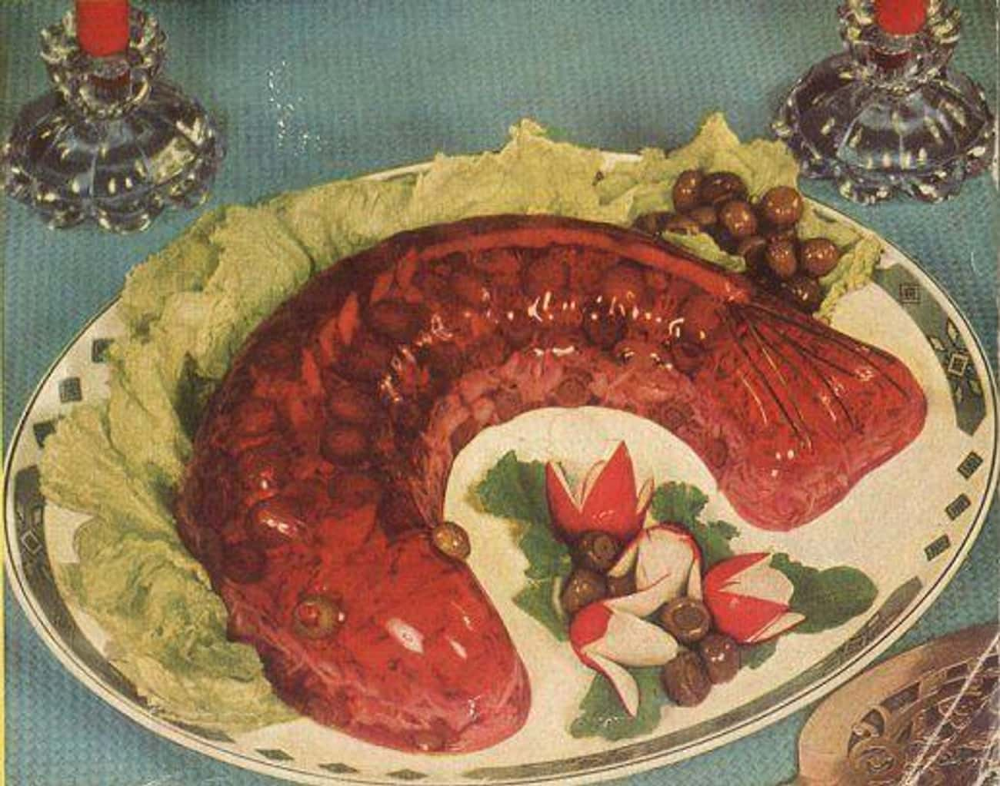

Glace fish mold

Looks like something my dog threw up 2 weeks ago
This abnormal thing is jell-O molded into the shape of a fish. There are raw cucumbers, green peppers, and onions inside.
Just dont.
Ingredients
- 1/2 cup cold water
- 1 envelope plain gelatine
- 1 cup boiling water
- 2 tablespoons sugar
- 1/2 teaspoon salt
- 3 tablespoons lemon juice
- 1 cup flaked fish
- 1/4 cup diced green pepper
- 1/2 inpeeled cucumber, cut
- 1 small inion, sliced
- 1/2 cup chopped pimiento
- 1/4 cup diced celery
Step by step
- Soften gelatine in cold water, dissolve in boiling water.
- Add sugar, salt, lemon juice.
- Cool.
- When mixture begins to thicken, fold in fish, green pepper, cucumber wedges, onion rigns, pimiento and celery.
- Pour into 1-quart mold, rinsed in cold water.
- When firm, unmold, garanish as desired.
- Serve with bowl of mayonaise.
Back to main page